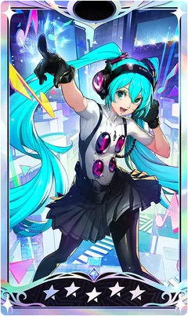

MIKU Hatsune Miku
Fonte: https://lufel.net/en/character/miku/ · letto il 2026-11-14 con il browser integrato (spoiler attivi) · Stato Global: rilasciata. Convenzione: nomi di skill, awareness, armi, Persona, set e stat lasciati in inglese come su lufel.net; condizioni ed effetti tradotti in italiano. Valori skill = LV10 / LV10+Minds 5 / LV13 / LV13+Minds 5 (la pagina ha anche una scheda "Sync Mindscape" con i valori KR/CN/TW, non estratti). Valori armi = refinement R0/R1/R2/R3/R4/R5/R6.
Scheda#
| Campo | Valore |
|---|---|
| Nome | Hatsune Miku |
| Codename | MIKU |
| Persona | Persona (lufel indica "Persona" come nome) |
| Rarità / tipo | 5★ · Limited (collaborazione) |
| Elemento | Buff (Navigator/Elucidator, nessun elemento d'attacco) |
| Posizione | Elucidator |
| Ruolo (lufel) | non indicato |
| Tag (lufel) | Virtual Live · Attack · Damage Mult · Crit Rate · Crit Mult · Pierce Rate · Recovery |
| Resistenza / Debolezza | non indicate (Elucidator) |
Character Review (lufel)#
- Hatsune Miku è una Elucidator uscita simultaneamente su tutti i server per il 1º anniversario del server Global.
- Gli effetti aggiuntivi di Feel the Beat (Skill 1) e Clear Sound (Skill 2) cambiano in base alla canzone in riproduzione. Ogni volta che una canzone viene riprodotta, Miku ottiene la Track corrispondente a quella canzone.
- Per ognuna delle tre canzoni può essere attivo l'effetto di una sola tra Skill 1 e Skill 2, quindi la rotazione cambia in base al party (ad esempio se serve più Crit Rate o più Pierce).
| Canzone | Skill 1 (Attack Up +) | Skill 2 (Damage Up +) | Track generata |
|---|---|---|---|
| Heaven | Pierce Rate Up | HP Recovery | Break Track |
| Spring Storm | Party Damage Up | Weakness Damage Up | Critical Track |
| Play-With-Fire | Critical Damage Up | Critical Rate Up | Expert Track |
| → Skill 3 Virtual Concert | nemici incapaci di agire · gli alleati agiscono per 2 turni · riattiva tutti e 3 gli effetti Track · Critical Damage Up · SP Recovery |
- Virtual Concert: Showstopper (Skill 3) è la skill centrale: spende 3 Track diverse per attivare Virtual Concert. All'attivazione i turni dei nemici si fermano e gli alleati ottengono 2 turni di combattimento.
- Quando Miku entra in Virtual Concert, i buff concessi da Miku vengono estesi di 2 turni. Per questo, se Skill 1 e Skill 2 non vengono usate entrambe nei 2 turni immediatamente precedenti alla Skill 3, mancherà uno dei buff base e l'efficienza cala drasticamente.
- Inoltre, poiché i nemici non agiscono, i debuff applicati ai nemici restano attivi durante quei 2 turni senza che il loro conteggio diminuisca.
- Se Miku ha Awareness 2, all'attivazione di Virtual Concert tutti gli effetti buff di Skill 1 e Skill 2 vengono concessi per 2 turni. Però i turni fuori da Virtual Concert restano uguali, quindi l'Awareness 2 non toglie senso alla rotazione.
- Confronto con Manaka: poiché la maggior parte dei DPS segue un ciclo di danno di 2 turni, Miku viene confrontata direttamente con il Turn Revert di Manaka come modo per ottenere una finestra di danno aggiuntiva. Poiché tutti gli alleati ottengono turni extra e ne beneficiano anche i sub-DPS, il suo meccanismo base è generalmente considerato una versione più forte di quello di Manaka. Tuttavia il Turn Revert di Manaka preserva gli stack accumulati dal DPS, quindi Manaka può restare più forte per i DPS che concentrano gli stack in un unico colpo potente in un turno specifico, o che richiedono un setup di 3 turni.
- Differenza tra server: sui server KR/CN/TW il Sync Mindscape è applicato per primo e aumenta molto i valori delle skill di Miku. La versione Global EN/JP/SEA dovrebbe ricevere il Sync Mindscape con le versioni future, quindi anche con la stessa rotazione i valori attuali dei buff e le prestazioni pratiche risultano inferiori rispetto a KR/CN/TW. Sui server Global la struttura della rotazione si può usare così com'è, ma le prestazioni di picco vanno valutate separatamente in base ai valori base delle skill, all'arma esclusiva e al livello di Awareness.
Pro - Fornisce un'ampia gamma di buff: Pierce, danno su debolezza, Crit Rate e Crit Mult. - Può concedere 2 turni extra tramite Virtual Concert.
Contro - La rotazione è difficile perché bisogna capire come cambiano gli effetti di Skill 1 e Skill 2 in base alla canzone.
Recommended Setup (lufel)#
Nota lufel: le impostazioni consigliate sono basate su contenuti futuri; alcune funzioni potrebbero non essere ancora disponibili (Revelation, Mindscape, ecc.).
- Revelation — Space: Integrity (tooltip "Integrity - Labor": se equipaggiata da Navigator Thieves, aumenta HP, ATK e DEF di tutti gli alleati di un ulteriore 2% per ogni alleato dello stesso elemento) · Sun/Moon/Star/Sky: Labor ×4 (2-Set: HP +12% · 4-Set: se equipaggiato da Navigator Thieves, HP, ATK e DEF di tutti gli alleati +8%)
- Main Options — Sun: HP · Moon: Attack / Damage Mult · Star: Crit Mult / Crit Rate · Sky: Attack
- Sub Options — 1ª priorità: Attack · 2ª: Crit Mult / Crit Rate · 3ª: Pierce Rate / Damage Mult
- Recommended Stats — LV10: Attack 4400 · LV10+Minds 5: Attack 4840 · LV13: Attack 4928 · LV13+Minds 5: Attack 5368
- Battle Entry + — Thieves Den 50LV +65 · Thieves Den 70LV +110 (o più) · Thieves Den Rating
- Priorità skill — 1º Skill 3 · 2º Skill 1 · 3º Skill 2 (tutte MAX) · Highlight: "-" (gli Elucidator non hanno Highlight)
- Mindscape (LV 5) — Rank Strengthening 1: Attack 20% · Rank Strengthening 2: Crit Rate 12% · Skill Enforce 1: Skill2 / Skill3 · Skill Enforce 2: Skill1
- Skill Rotation — Critical Rate: - › 2 › 1 › 2 › 3 › 2 › 1 · Critical Effect: - › 1 › 2 › 1 › 3 › 1 › 2 · No Pierce: - › 2 › 1 › 2 › 3 › 2 › 1 · Off-element: - › 1 › 2 › 1 › 3 › 1 › 2
- Notes (lufel) — Skill 1 e Skill 2 non possono essere usate entrambe per la stessa canzone · I buff usati al turno 4 durano fino alla fine del turno 6 e le Track si possono riottenere dopo la Skill 3 · 1. 『Heaven』: di norma fissa alla Skill 1 per il Pierce Rate · 2. 『Spring Storm』: di norma fissa alla Skill 2 · 3. 『Play-With-Fire』: per il Crit Rate si usa la S2, per il Crit Mult la S1
Skills (LV10 / LV10+Minds 5 / LV13 / LV13+Minds 5)#
Skill 1 — Feel the Beat (cooldown: 4 azioni alleate) Aumenta l'Attack del party dello 0.57% ogni 100 punti di Attack di Miku (conta fino a 4400/4840/4928/5368 di Attack di Miku, fino a un massimo del 25.0%/27.5%/28.0%/30.5%) per 3 turni. Concede inoltre effetti al party in base alla canzone in riproduzione: - Heaven: se Miku non ha Break Track, aumenta il Pierce Rate del party dello 0.2% ogni 100 punti di Attack di Miku (conta fino a 4400/4840/4928/5368, massimo 9.0%/9.9%/10.1%/11.0%) per 3 turni; ottiene Break Track. - Spring Storm: se Miku non ha Critical Track, aumenta il danno del party dello 0.34% ogni 100 punti di Attack di Miku (conta fino a 4400/4840/4928/5368, massimo 15.0%/16.5%/16.8%/18.3%) per 3 turni; ottiene Critical Track. - Play-With-Fire: se Miku non ha Expert Track, aumenta il danno critico (Crit Mult) del party dello 0.41% ogni 100 punti di Attack di Miku (conta fino a 4400/4840/4928/5368, massimo 18.0%/19.8%/20.2%/22.0%) per 3 turni; ottiene Expert Track.
Skill 2 — Clear Sound (cooldown: 4 azioni alleate) Aumenta il danno del party dello 0.34% ogni 100 punti di Attack di Miku (conta fino a 4400/4840/4928/5368, massimo 15.0%/16.5%/16.8%/18.3%) per 3 turni. Concede inoltre effetti al party in base alla canzone in riproduzione: - Heaven: se Miku non ha Break Track, ripristina HP al party pari al 30% dei loro HP massimi; ottiene Break Track. - Spring Storm: se Miku non ha Critical Track, aumenta il danno su debolezza del party dello 0.11% ogni 100 punti di Attack di Miku (conta fino a 4400/4840/4928/5368, massimo 4.8%/5.3%/5.4%/5.9%) per 3 turni; ottiene Critical Track. - Play-With-Fire: se Miku non ha Expert Track, aumenta il Crit Rate del party dello 0.2% ogni 100 punti di Attack di Miku (conta fino a 4400/4840/4928/5368, massimo 9.0%/9.9%/10.1%/11.0%) per 3 turni; ottiene Expert Track.
Skill 3 — Showstopper (cooldown: 6 azioni di Wonder, azioni extra escluse) Richiede 3 tipi diversi di Track. Spende tutte le Track per attivare Virtual Concert e cambia la canzone in riproduzione in Ghost Rule. Ferma il turno dei nemici e concede agli alleati turni extra per 2 turni (questi turni non contano come azioni extra e non contano nel totale delle azioni, ma riducono i conteggi di buff, debuff ed effetti di danno continuo). All'attivazione di Virtual Concert, tutti i buff sugli alleati concessi da skill, arma o Talent di Miku vengono estesi di 2 turni; gli effetti concessi all'ottenimento delle Track vengono riattivati e durano 2 turni. Aumenta il danno critico (Crit Mult) del party dello 0.34% ogni 100 punti di Attack di Miku (conta fino a 4400/4840/4928/5368, massimo 15.0%/16.5%/16.8%/18.3%) per 2 turni. Inoltre ripristina 35 SP a tutti gli alleati. Durante Virtual Concert non si possono usare skill di supporto e i loro cooldown non diminuiscono. Alla fine dei turni extra degli alleati, Virtual Concert viene rimosso.
Stat Buff (passiva da Elucidator): aumenta le stat del party del 20% delle stat di Miku.
Passiva — Setlist: quando ottiene una Track, aumenta l'Attack del party del 12.0% per 3 turni; cumulabile fino a 3 volte.
Passiva — Fan Favorite: mentre Virtual Concert è attivo, aumenta il danno del party del 24.0%.
Awareness#
- A0 — Virtual Stage (talento base): in battaglia Miku può cambiare lo scenario e la canzone in riproduzione durante i turni degli alleati, e i suoi effetti skill sono potenziati in base alla canzone corrente. Quando le skill di Miku diventano disponibili, la canzone corrente cambia automaticamente. Usando Feel the Beat o Clear Sound su canzoni per cui Miku ha già ottenuto la Track corrispondente, riapplica lo stesso effetto aggiuntivo.
- A1 — Hologram Screen: ottiene Skill Amplification pari al 15%. All'attivazione di Virtual Concert, azzera i cooldown Highlight di tutti gli alleati. Mentre Virtual Concert è attivo, aumenta del 10% la Final Damage Amplification di Highlight e Theurgy e raddoppia la velocità di riempimento delle barre Highlight e Theurgy.
- A2 — Blue-Green Sea: all'attivazione di Virtual Concert concede tutti gli effetti di Feel the Beat e Clear Sound per 2 turni. Mentre Virtual Concert è attivo, aumenta la Final Damage Amplification del party dell'8%.
- A3 — Echoing in your Heart: aumenta di 3 i livelli di skill di Feel the Beat e Showstopper.
- A4 — Let's Sing Together: quando un alleato attiva un Highlight o una Theurgy, aumenta l'Attack di quell'alleato del 25% per 2 turni.
- A5 — Reaching your Heart: aumenta di 3 il livello di skill di Clear Sound.
- A6 — Neverending Song: al termine di Virtual Concert, tutti i nemici subiscono danno Almighty fisso pari al 100% del danno totale subito da ciascun bersaglio durante Virtual Concert.
Stats#
- Base (LV1): HP 315 · ATK 98 · DEF 53 · Speed 100
- Hidden Ability LV7: Hidden Stat 29 (lufel non specifica la stat)
- LV80 (HP / ATK / DEF): A0 3540 / 1100 / 600 · A1 3604 / 1120 / 611 · A2 3667 / 1140 / 622 · A3 3731 / 1159 / 633 · A4 3795 / 1179 / 643 · A5 3858 / 1199 / 654 · A6 3922 / 1219 / 665
Armi esclusive (valori R0/R1/R2/R3/R4/R5/R6)#
5★ Light Up Your World — HP 2339 · ATK 727 · DEF 396 - Aumenta l'Attack del 30.0%/30.0%/39.0%/39.0%/48.0%/48.0%/57.0%. - Aumenta il danno critico (Crit Mult) del party del 18.1%/23.5%/23.5%/28.9%/28.9%/34.3%/34.3%. - Per ogni Track ottenuta, aumenta ulteriormente il danno critico (Crit Mult) del party del 3.0%/3.9%/3.9%/4.8%/4.8%/5.7%/5.7% per 3 turni; cumulabile fino a 3 volte. - Mentre Virtual Concert è attivo, ottiene Skill Amplification pari al 10.0%/13.0%/13.0%/16.0%/16.0%/19.0%/19.0%.
4★ Trendsetter — HP 1871 · ATK 581 · DEF 317 - Aumenta l'Attack del 12.0%/12.0%/16.0%/16.0%/20.0%/20.0%/24.0%. - Quando ottiene una Track, aumenta l'Attack di Miku del 22.0%/29.0%/29.0%/36.0%/36.0%/43.0%/43.0%.
Attribute Mindscape (lufel: introdotto in KR V5.2, forse non ancora su Global)#
- Mindscape Synergy — Damage Increase (consigliata): aumenta il danno dell'8.0%/16.0%.
- Mindscape Combat Skill — Critical Damage Boost (consigliata): all'inizio della battaglia aumenta permanentemente il danno critico (Crit Mult) di tutti gli alleati del 7.5%/15.0%.
Recommended Combination (lufel)#
- Sezione non presente nella pagina lufel di questo personaggio (Elucidator).
Recommended Parties (lufel)#
- La sezione "Recommended Parties Example" nella pagina lufel è vuota (nessun lineup né party d'esempio).
Nomenclatura#
- lufel: "Hatsune Miku" (codename MIKU), slug URL
miku. Risorse/stati: Track (Break Track, Critical Track, Expert Track), Virtual Concert, canzoni Heaven / Spring Storm / Play-With-Fire / Ghost Rule, Skill Amplification. - Nelle descrizioni lufel "critical rate" = Crit Rate, "critical damage" = Crit Mult.